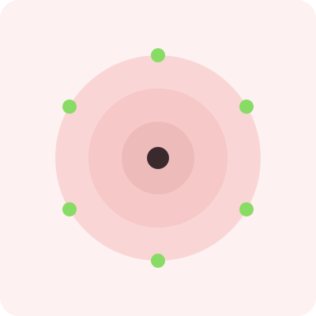
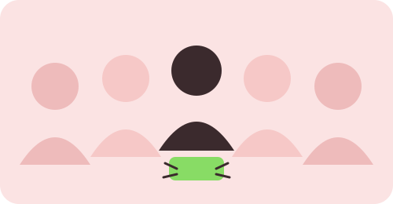

Lo que nos mueve como equipo y hacia dónde queremos llegar con este proyecto.
Somos un equipo de estudiantes interesados en la ciencia, la tecnología y la innovación. Diseñamos y construimos un robot hexápodo como proyecto educativo para aplicar conocimientos de robótica, programación, física, electrónica y mecánica, desarrollando soluciones que puedan ser útiles en diferentes ambientes.
Ser un equipo estudiantil que fomente el interés por la robótica y la tecnología mediante proyectos innovadores, creativos y funcionales, demostrando que el conocimiento científico puede utilizarse para crear soluciones y comprender mejor nuestro entorno.

Nuestro proyecto fue desarrollado mediante el trabajo colaborativo de los estudiantes:

Usos y aplicaciones del robot y movimiento circular sobre su propio eje.
Leyes de Newton, fricción y conceptos físicos presentes en el robot.
Robótica, Arduino, programación y marco teórico.
Robótica bioinspirada, estabilidad, materiales y funcionamiento de los componentes.
Investigación sobre el robot hexápodo, funcionamiento, movimiento de las patas y apoyo en el desarrollo del proyecto.